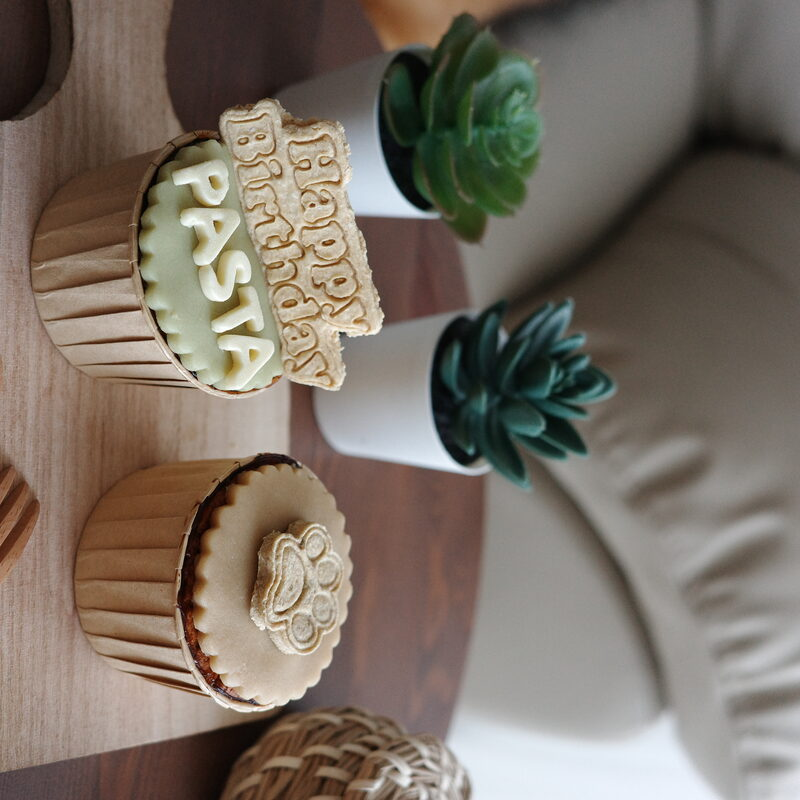

Your dog's birthday comes once a year. And if you're the kind of pet parent who genuinely considers your dog family — which, if you're reading this, you probably are — it deserves to be marked properly.
Singapore is surprisingly well-set-up for this. There are dog-friendly parks, cafes, and bakeries that make celebrating your fur baby's big day genuinely fun. Here's how to put it all together.
Step 1: Pick Your Setting
The location sets the tone for everything else. Singapore has a few great options depending on how big you want to go.
Option A: A home gathering
Invite a few of your dog's best friends (and their humans) over for a small get-together. This works especially well for dogs who get overwhelmed in public spaces, and it gives you total control over what food and treats are available. You can set up a little "birthday corner" with a banner, some toys, and of course the cake.
Option B: A dog-friendly park
Bishan-Ang Mo Kio Park, East Coast Park, and West Coast Park all have off-leash areas where dogs can run free. A birthday picnic here is a lovely low-key option — bring a mat, some snacks for the humans, and a birthday cake for the star of the show.
Option C: A dog-friendly cafe
Several cafes in Singapore welcome dogs, including some with special menus for pets. Check ahead whether outside seating or indoor access is allowed for dogs, as policies vary.
Whatever setting you choose, pick somewhere your dog already feels comfortable. A birthday is not the ideal day to introduce a new environment that might stress them out.
Step 2: Invite the Right Guests
Dogs are social animals, but they also have social preferences. Think about which other dogs your dog actually enjoys being around, rather than just inviting everyone you know with a dog. A small group of familiar friends is almost always better than a large crowd of strangers.
If your dog is an only-pet type, a human-only gathering focused entirely on spoiling your dog is just as valid — honestly, they'll probably prefer having all the attention to themselves.
Step 3: Sort the Food — For Dogs and Humans
This is the most important part to get right. Make sure there's a clear separation between human food and dog food at the party. Dogs can easily get into things they shouldn't, especially with excited guests around who might not know what's safe to share.
- Keep human food out of reach — especially anything containing chocolate, grapes, onion, or xylitol
- Have dog-specific treats ready and clearly labelled as dog food
- Make sure all guests know not to feed the dogs without checking with you first
- Have fresh water available throughout
Step 4: The Birthday Cake
This is, arguably, the centrepiece of the whole celebration. A proper dog birthday cake should be made specifically for dogs — not a human cake with a candle stuck in it.
What to look for in a dog birthday cake:
- Human-grade ingredients — no by-products, no fillers
- No added sugar — dogs don't need it and it causes health issues over time
- No artificial colours or flavours — natural fruit and veg powders are the safe alternative
- Made to order — fresh is always better than something that's been sitting on a shelf with preservatives
- Customisable — adding your dog's name to the fondant makes the photo ten times better

Custom fondant name add-on available on all PawPa Pastry birthday cupcakes.
Step 5: Capture the Moment
Dogs don't understand birthdays, but they absolutely understand attention, cake, and having all their favourite people in one place. That combination tends to produce genuinely joyful moments worth photographing.
A few things that reliably make for great birthday photos:
- Put the cake at nose-level for your dog — the anticipation shot is always adorable
- Have someone on video while someone else presents the cake
- If you have a birthday hat, try it briefly before the cake — most dogs will tolerate it for about 30 seconds, which is enough
- Natural light always wins over flash for pet photos
Get down to your dog's level when shooting. Eye-level shots almost always look better than top-down, and they capture the expression properly.
Step 6: Let Them Lead
The best dog birthday celebrations are the ones where the dog is clearly having a good time — not the ones that look perfect on Instagram but left your dog stressed and overstimulated. Read your dog's energy throughout the day. If they're getting tired or overwhelmed, wind things down early. The cake will still taste just as good on a quieter afternoon.
At the end of the day, your dog just wants to be with you. Everything else — the cake, the party, the photos — is for the two of you together. Make it count. 🐾
Order your dog's birthday cake
All-natural, handmade to order, with custom fondant name available. Message us to get started.
💬 Order on WhatsApp